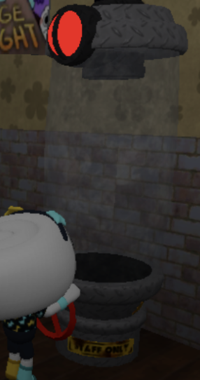
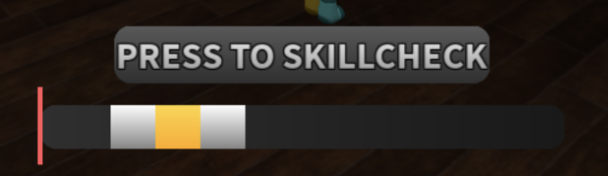
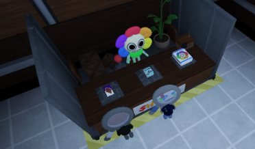
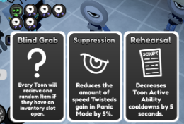
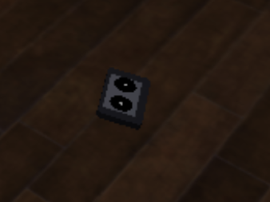
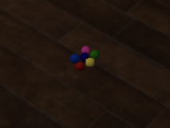

While playing the actual game, you need to do some things, and you will also see different things.
Machines are scattered around the maps, and you need to complete them to get to the next floor. More machines will spawn the higher up you are. While doing a machine, there will occasionally be skill checks. Hitting the skillcheck in the gray will make it so the twisteds come to you. Hitting the skill check in the white will not do anything, and hitting the skill check in the yellow adds more to the machines.
 After every odd floor dandy will show up in the elevator with a shop, with items you can buy with tapes. After every even floor there will be cards. These cards can affect the players, or the floors. There are a bunch of cards, but every floor the players can only choose between 3. The card with the most votes will be picked, and if there is a tie, then the game randomly picks between the tie.
 Items are things you can pick up off the floor, or buy from dandy’s world. Items either affect one of your stats for a short amount of time, or help with machines. You have three slots in your inventory to hold items, and you won’t be able to pick up another item if you have three on you already. Tapes can be found on the ground, but they are also given to you once you finish a machine, and once you get in the elevator after a floor is complete.
 